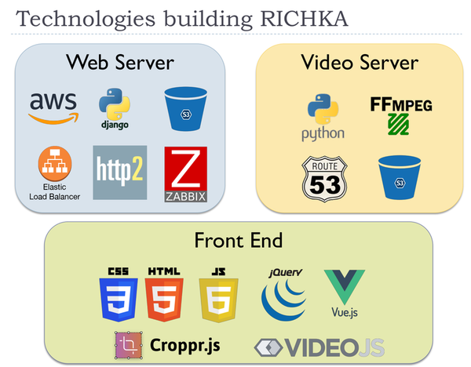
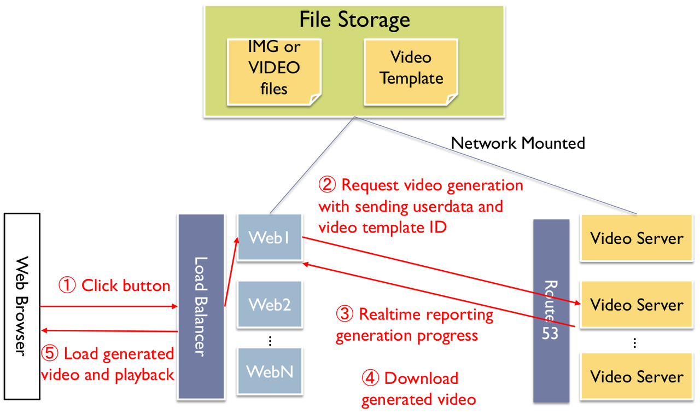

Big picture of RICHKA
Posted by Hitoshi Uchida
Abstract
This is the first post from our engineer team.
We periodically share technological topics such as new integrated features into products and new technologies we are interested in and prototype implementations to evaluate the feasibility whether they are worth developing as actual business service.
In this post, we introduce a web application RICHKA which enables users to easily create high quality videos on web browsers, especially, the development environment and the server infra structures and the processing sequence of the primary function to generate high quality videos with using image/videos users upload. The architecture and internal processing are generally complicated than general services such as EC and blog and chat system because the size of video files are huge and we need to carefully take care the load of servers such as delegating heavy processing to other dedicated video servers and applying delaying processing to postpone heavy processing later. And the load of file storage is also high and we need to take care the timing to load files from network storage. On GUI, we don't initially load video contents because it increases the load of web servers and delay the response and influences to UX. Instead, we load thumbnails of any videos on GUI and load video contents only when they are played on video player.
RICHKA has some dedicated video engines to generate high quality videos with using well designed video templates created by expert designers. To make the representation of videos richer, video servers enable to change not only input texts and image/video material files users upload, but also font family and color scheme and BGM in realtime during generating videos. The load of video generation processing is very heavy and we apply lots of optimization to reduce the generation time with keeping the high quality. Therefore video services demand higher development skills of web applications.
RICHKA Development Environment

The engineer team is basically remote and more than 90% live in foreign countries. We hire only high skill experts who have strong skills of web technologies and web application development. We will describe our team more on another post later.
We always apply new emerged technologies into products to enhance the features and reduce development cost. It is free for our engineers to propose them to see the feasibility and the side effect. The speed of try and error is faster than general teams because our team is completely flat and every member has the privilege to propose new ideas among members. If clear and reasonable purposes are explained to the team, they are basically accepted.
Regarding server side, it is based on Python and Django and we use additional 42 Python packages such as Django extensions and image/video manipulation and statistics and crypt. The current total lines of Django is around 12200.
Regarding front end, we use abut 20 OSS libraries to build the functional GUI such as jQuery, cropper.js, smartcrop.js, Vue, Bootstrap and so on. The current total lines of JavaScript codes we developed is around 13000.
OS
Ubuntu Server
Programming Language
Python, JavaScript, HTML5, CSS3, JSX, Bash
Server Side Technologies
Django, MySQL, HTTP2, Web API, video generation engine, image processing, multi core processing, load distribution
Front End
jQuery, jQuery UI, Vue.js, video.js, cropper.js, smartcrop.js, Bootstrap and much more
Regression Test
Jenkins, Django UnitTest, Selenium
Sequence of video generation

RICHKA is behind a load balancer to distribute lots of coming HTTP requests to multiple web servers. And to enable simultaneous video generation at a time, the video generation requests are also distributed to multiple video servers. The user data such as images/videos users upload and video template files used by video engine are stored on an external network storage. They are retrieved from both web servers and video servers.
The summary sequence of video generation is,
- Users click a button to generate videos and the requests reach one of web servers via the load balancer.
- The web server retrieves the user data such as selected video template and font families and color scheme and BGM and make HTTP requests and send to one of video servers.
- The web server receives the generation progress in realtime and store into the database to show the progress on GUI.
- When the generations have been done, the web server downloads the generated videos and store into the file storage.
- The web server sends the generated videos to web browsers and video player loads them and users can see on GUI.